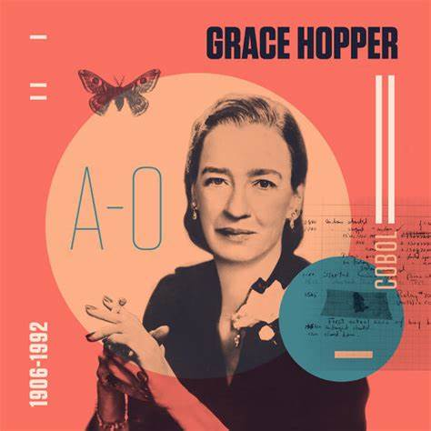
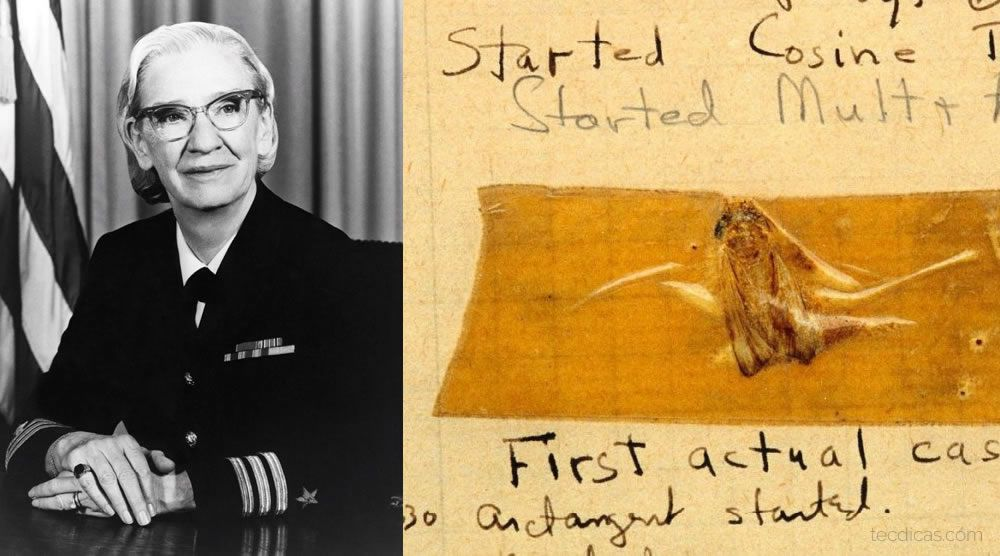
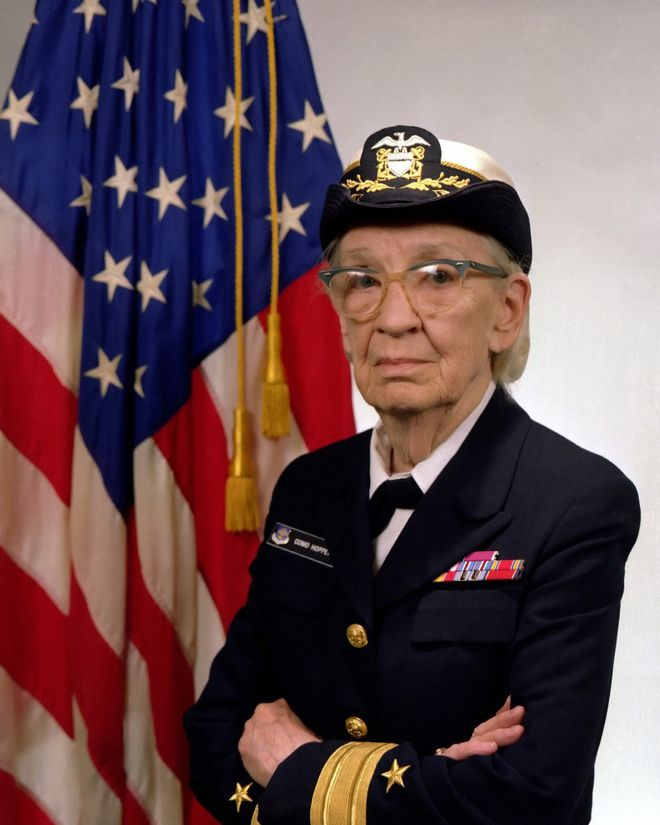

Por que Vovó Colbol?
Isso porque ela foi a criadora da linguagem de programação "Flow-matic", que posteriormente foi utilizada como base para a criação do COBOL, que inclusive, é utilizada até hoje por empresas em todo o mundo.

Esta mulher, ao longo da história, conquistou títulos como “a incrível Grace Hopper”, “Rainha da Computação”, “Rainha da Codificação”, “vovó do COBOL” e “Grande Dama do Software”, conquistou também grandes prêmios, contribuiu na criação da linguagem de programação Flow-matic e por aí vai.
Isso porque ela foi a criadora da linguagem de programação "Flow-matic", que posteriormente foi utilizada como base para a criação do COBOL, que inclusive, é utilizada até hoje por empresas em todo o mundo.
Por sua história tão rica e vida cheia de conhecimento? Por sua contribuição para a tecnologia? Por sua grande curiozidade desde a infância, na qual até mesmo desmontou um despertador ao desmontá-lo aos sete anos de idade? Sim, todos esses são e foram motivos para que nos interessemos pela história desta grande e dedicada mulher. Porém, o principal motivo é um pouco mais cômico. Desde pequenos nós já usamos o termo "bug", e sabemos que significa uma falha em uma máquina, sistema, códigos-fonte e até quando alguém se perde em uma fala ou não se lembra o que estava fazendo, dizemos que "deu bud" ou "bugou". Bem, mas de onde veio o termo? Em 1943, Grace Hopper estava a trabalhar na marinha norte americana durante a segunda guerra mundial, era uma época difícil em que estava muita coisa em jogo e havia uma falha no computador Mark I que era utilizado para realizar operações militares. Enquanto Grace tentava encontrar onde estava um problema em seu computador, o desmontou e encontrou uma traça metida no meio das peças do computador e decidiu esmagá-la com o seu caderno. Depois, removeu a traça do computador com uma pinça, colou-a no caderno e ao lado da traça escreveu: "9 de setembro - Primeiro caso em que um bug é encontrado" Em inglês, a palavra bug traduz-se por bicho ou percevejo, por tanto, desde então o termo dug foi criado e usamos até o dia de hoje.
Entre os inúmeros prêmios que recebeu, estão mais de 40 doutorados honoris causa, a medalha de Serviço Distinto da Defesa e a Medalha Nacional de Tecnologia. Ela ainda foi homenageada ao ver um destróier da Marinha sendo batizado com seu nome. Além disso, também recebeu a primeira edição do prêmio “Homem do Ano” da Ciência da Computação conferido pela Associação de Gerenciamento de Processamento de Dados, tornando-se a primeira mulher (e primeiro cidadão americano) a ser nomeada Distinguished Fellow pela British Computer Society.
